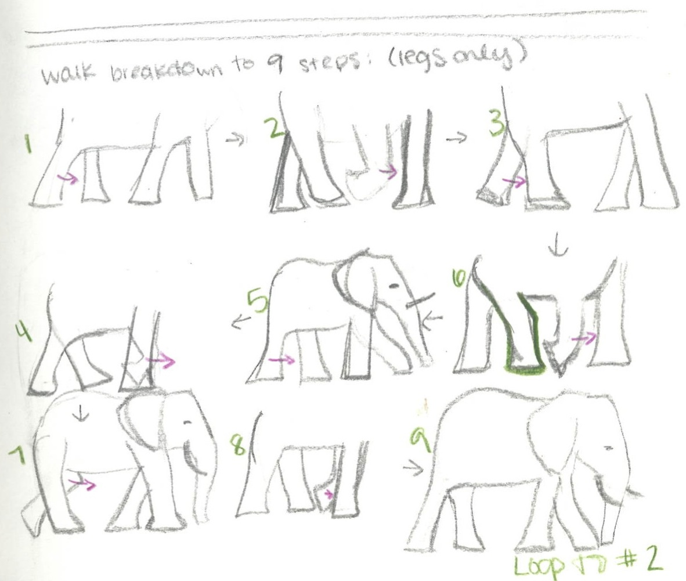
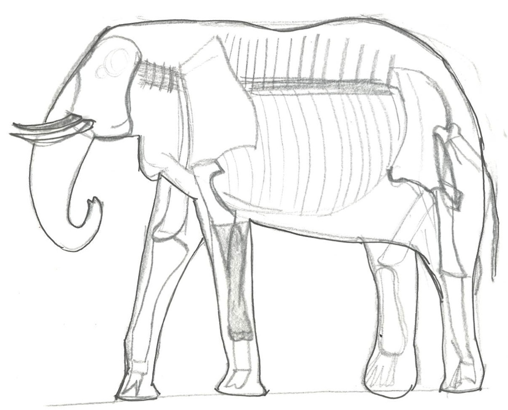
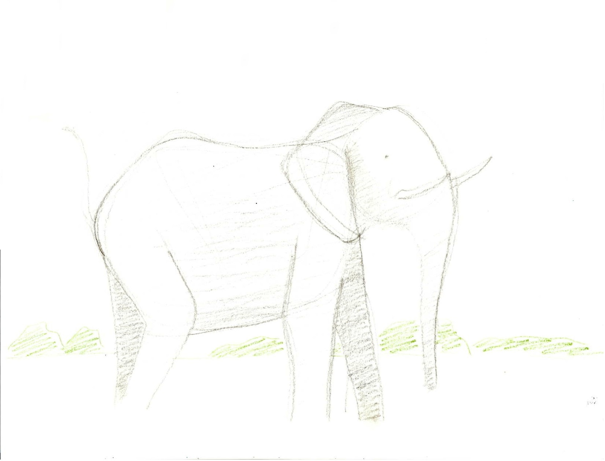

Elephant Animation
The final elephant animation is a hand drawn animation made up of over 50 unique sketches that I drew on trace paper. I created this animation for the final project of my Methodology of Visualization course at CMU. The task given was to show a process that occurs in nature.
Process
I began by doing a lot of research into elephants, specifically African elephants, and breaking down the patterns in their walking. After many preliminary sketches, I developed a concept animation, made of 8 repeating frames. I then set forth to really understand the structure of an elephant via youtube videos and images. Then, I finally completed my animation.
 This project was completed in a span of 3 weeks in Fall 2013.
Back to all projects!